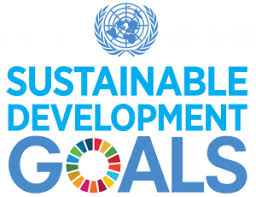

Kerja sama bilateral antara Indonesia dan Costa Rica dalam bidang energi terbarukan menjadi salah satu inisiatif utama yang mengacu langsung pada Tujuan Pembangunan Berkelanjutan (SDG) 7: Energi Bersih dan Terjangkau. SDG 7 menekankan pentingnya memastikan akses terhadap energi yang terjangkau, andal, berkelanjutan, dan modern untuk semua. Kolaborasi ini memberikan peluang bagi kedua negara untuk saling berbagi pengetahuan, teknologi, dan praktik terbaik dalam pengembangan energi terbarukan, sekaligus mempercepat pencapaian target SDG 7.
Keunggulan Costa Rica dalam Energi Terbarukan:
Costa Rica dikenal memiliki keunggulan dalam pengembangan energi terbarukan, terutama dalam bidang energi hidro dan geotermal. Negara ini telah berhasil mencapai hampir 100% dari total kebutuhan energinya dari sumber-sumber energi terbarukan. Keberhasilan ini merupakan hasil dari komitmen kuat dan investasi besar dalam infrastruktur energi hijau, serta kebijakan yang mendukung pengembangan energi bersih.
Peluang bagi Indonesia:
Bagi Indonesia, yang juga memiliki potensi besar dalam energi terbarukan, kerja sama dengan Costa Rica menawarkan banyak peluang. Indonesia dapat mempelajari dan menerapkan teknologi yang telah sukses diterapkan di Costa Rica, seperti pembangkit listrik tenaga air (hidro) dan panas bumi (geotermal). Beberapa manfaat yang dapat diperoleh Indonesia dari kerja sama ini antara lain:
Pengembangan energi terbarukan melalui kerja sama ini juga memberikan dampak positif pada lingkungan. Energi terbarukan seperti hidro dan geothermal menghasilkan emisi gas rumah kaca yang jauh lebih rendah dibandingkan dengan bahan bakar fosil. Hal ini akan membantu Indonesia mencapai target pengurangan emisi yang telah ditetapkan dalam Perjanjian Paris dan meningkatkan kualitas udara serta kesehatan masyarakat.